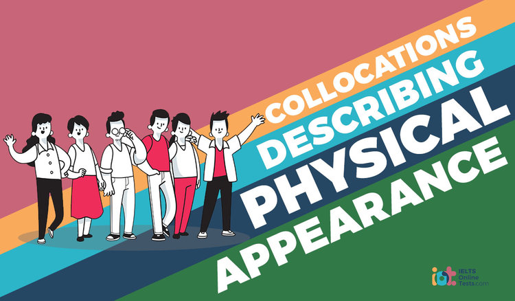

Personality and appearance
When Charles Darwin applied to be the “energetic young man” that Robert Fitzroy, the Beagle’s captain, sought as his gentleman companion, he was almost let down by a woeful shortcoming that was as plain as the nose on his face. Fitzroy believed in physiognomy—the idea that you can tell a person’s character from their appearance. As Darwin’s daughter Henrietta later recalled, Fitzroy had “made up his mind that no man with such a nose could have energy”. This was hardly the case. Fortunately, the rest of Darwin’s visage compensated for his sluggardly proboscis: “His brow saved him.”
The idea that a person’s character can be glimpsed in their face dates back to the ancient Greeks. It was most famously popularised in the late 18th century by the Swiss poet Johann Lavater, whose ideas became a talking point in intellectual circles. In Darwin’s day, they were more or less taken as given. It was only after the subject became associated with phrenology, which fell into disrepute in the late 19th century, that physiognomy was written off as pseudoscience.
First impressions are highly influential, despite the well-worn admonition not to judge a book by its cover. Within a tenth of a second of seeing an unfamiliar face we have already made a judgement about its owner’s character—caring, trustworthy, aggressive, extrovert, competent and so on. Once that snap judgement has formed, it is surprisingly hard to budge. People also act on these snap judgements. Politicians with competent-looking faces have a greater chance of being elected, and CEOs who look dominant are more likely to run a profitable company. There is also a well-established “attractiveness halo”. People seen as good-looking not only get the most valentines but are also judged to be more outgoing, socially competent, powerful, intelligent and healthy.
In 1966, psychologists at the University of Michigan asked 84 undergraduates who had never met before to rate each other on five personality traits, based entirely on appearance, as they sat for 15 minutes in silence. For three traits—extroversion, conscientiousness and openness—the observers’ rapid judgements matched real personality scores significantly more often than chance. More recently, researchers have re-examined the link between appearance and personality, notably Anthony Little of the University of Stirling and David Perrett of the University of St Andrews, both in the UK. They pointed out that the Michigan studies were not tightly controlled for confounding factors. But when Little and Perrett re-ran the experiment using mugshots rather than live subjects, they also found a link between facial appearance and personality—though only for extroversion and conscientiousness. Little and Perrett claimed that they only found a correlation at the extremes of personality.
Justin Carre and Cheryl McCormick of Brock University in Ontario, Canada studied 90 ice-hockey players. They found that a wider face in which the cheekbone-to-cheekbone distance was unusually large relative to the distance between brow and upper lip was linked in a statistically significant way with the number of penalty minutes a player was given for violent acts including slashing, elbowing, checking from behind and fighting. The kernel of truth idea isn’t the only explanation on offer for our readiness to make facial judgements. Leslie Zebrowitz, a psychologist at Brandeis University in Waltham, Massachusetts, says that in many cases snap judgements are not accurate. The snap judgement, she says, is often an “overgeneralisation” of a more fundamental response. A classic example of overgeneralisation can be seen in predators’ response to eye spots, the conspicuous circular markings seen on some moths, butterflies and fish. These act as a deterrent to predators because they mimic the eyes of other creatures that the potential predators might see as a threat.
Another researcher who leans towards overgeneralisation is Alexander Todorov. With Princeton colleague Nikolaas Oosterhof, he recently put forward a theory which he says explains our snap judgements of faces in terms of how threatening they appear. Todorov and Oosterhof asked people for their gut reactions to pictures of emotionally neutral faces, sifted through all the responses, and boiled them down to two underlying factors: how trustworthy the face looks, and how dominant. Todorov and Oosterhof conclude that personality judgements based on people’s faces are an overgeneralisation of our evolved ability to infer emotions from facial expressions, and hence a person’s intention to cause us harm and their ability to carry it out. Todorov, however, stresses that overgeneralisation does not rule out the idea that there is sometimes a kernel of truth in these assessments of personality.
So if there is a kernel of truth, where does it come from? Perrett has a hunch that the link arises when our prejudices about faces turn into self-fulfilling prophecies—an idea that was investigated by other researchers back in 1977. Our expectations can lead us to influence people to behave in ways that confirm those expectations: consistently treat someone as untrustworthy and they end up behaving that way. This effect sometimes works the other way round, however, especially for those who look cute. The Nobel prize-winning ethologist Konrad Lorenz once suggested that baby-faced features evoke a nurturing response. Support for this has come from work by Zebrowitz, who has found that baby-faced boys and men stimulate an emotional centre of the brain, the amygdala, in a similar way. But there’s a twist. Babyfaced men are, on average, better educated, more assertive and apt to win more military medals than their mature-looking counterparts. They are also more likely to be criminals; think Al Capone. Similarly, Zebrowitz found baby-faced boys to be quarrelsome and hostile, and more likely to be academic highfliers. She calls this the “self-defeating prophecy effect”: a man with a baby face strives to confound expectations and ends up overcompensating.
There is another theory that recalls the old parental warning not to pull faces because they might freeze that way. According to this theory, our personality moulds the way our faces look. It is supported by a study two decades ago which found that angry old people tend to look cross even when asked to strike a neutral expression. A lifetime of scowling, grumpiness and grimaces seemed to have left its mark.
Questions 1-5
Do the following statements agree with the views of the writer in Reading Passage?
In boxes 1-5 on your answer sheet, write
YES if the statement agrees with the views of the writer
NO if the statement contradicts the views of the writer
NOT GIVEN if it is impossible to say that the writer thinks about this
1 Robert Fitzroy’s first impression of Darwin was accurate.
2 The precise rules of “physiognomy” have remained unchanged since the 18th century.
3 The first impression of a person can be modified later with little effort.
4 People who appear capable are more likely to be chosen to a position of power.
5 It is unfair for good-looking people to be better treated in society.
Questions 6-10
Choose the correct letter, A, B, C or D.
Write your answers in boxes 6-10 on your answer sheet.
6. What’s true about Anthony Little and David Perrett’s experiment?
A It is based on the belief that none of the conclusions in the Michigan experiment is accurate.
B It supports parts of the conclusions in the Michigan experiment.
C It replicates the study conditions in the Michigan experiment.
D It has a greater range of faces than in the Michigan experiment.
7. What can be concluded from Justin Carre and Cheryl McCormick’s experiment?
A A wide-faced man may be more aggressive.
B Aggressive men have a wide range of facial features.
C There is no relation between facial features and an aggressive character.
D It’s necessary for people to be aggressive in competitive games.
8. What’s exemplified by referring to butterfly marks?
A Threats to safety are easy to notice.
B Instinct does not necessarily lead to accurate judgment.
C People should learn to distinguish between accountable and unaccountable judgments.
D Different species have various ways to notice danger.
9. What is the aim of Alexander Todorov’s study?
A to determine the correlation between facial features and social development
B to undermine the belief that appearance is important
C to learn the influence of facial features on judgments of a person’s personality
D to study the role of judgments in a person’s relationship
10. Which of the following is the conclusion of Alexander Todorov’s study?
A People should draw accurate judgments from overgeneralization.
B Using appearance to determine a person’s character is undependable.
C Overgeneralization can be misleading as a way to determine a person’s character.
D The judgment of a person’s character based on appearance may be accurate.
Questions 11-14
Complete each sentence with the correct ending, A-F, below.
Write the correct letter, A-F, in boxes 11-14 on your answer sheet.
11 Perret believed people behaving dishonestly
12 The writer supports the view that people with babyish features
13 According to Zebrowitz, baby-faced people who behave dominantly
14 The writer believes facial features
A judge other people by overgeneralization,
B may influence the behaviour of other people,
C tend to commit criminal acts.
D may be influenced by the low expectations of other people.
E may show the effect of long-term behaviours.
F may be trying to repel the expectations of other people.
---End of the Test---
Please Submit to view your score, solution and explanations.